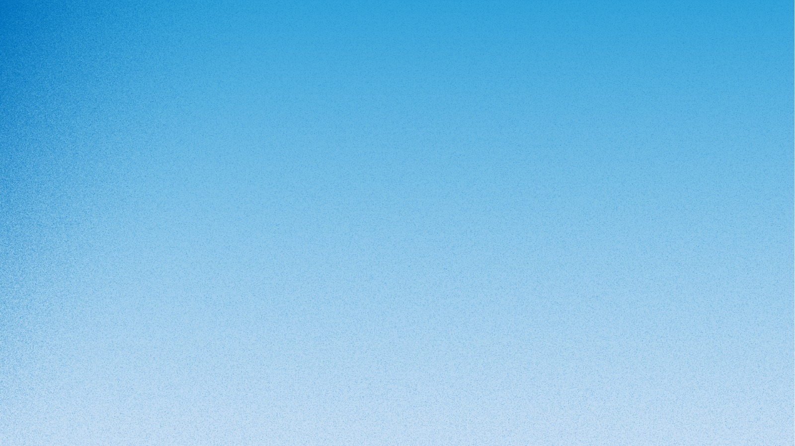

Quelle descente incroyable ! Les derniers virages étaient à couper le souffle !
Regardez les épreuves en watchparty, échangez sur les forums, vibrez avec la communauté Milano Cortina 2026.
Rejoindre le VillageRejoignez des millions de fans du monde entier. Participez à des watchparties virtuelles, partagez vos réactions et revivez les meilleurs moments ensemble.
Regardez les épreuves en direct avec des fans du monde entier
Partagez vos émotions instantanément avec la communauté
Revivez les moments forts avec les commentaires de la communauté
Quelle descente incroyable ! Les derniers virages étaient à couper le souffle !

Forza Italia! Oro per la nostra squadra!
Forza Italia ! Médaille d'or pour notre équipe !

Watching from Toronto! The atmosphere here is electric!
Je regarde depuis Toronto ! L'ambiance ici est électrique !
Du 6 au 22 février 2026, Milan et Cortina d'Ampezzo accueillent le monde. Mais les Jeux n'appartiennent pas qu'à ceux qui ont un billet.
La Mia Città est une application compagnon conçue pour celles et ceux qui suivent les JO depuis leur salon, leur bureau, ou n'importe où ailleurs. Chaque descente, chaque triple axel, chaque médaille vécus avec la même intensité que dans les tribunes, depuis là où tu es.
90+ pays dans la communauté 1 village, partout dans le monde 15 disciplines partagées en direct


Téléchargez La Mia Città et rejoignez des millions de fans du monde entier. L'émotion olympique accessible à tous, où que vous soyez.
Anecdote
Les Milanais ont une obsession quasi-religieuse pour le spritz, mais ils le font avec du Campari (pas de l'Aperol, c'est une affaire sérieuse). Des bars du centre ont littéralement perdu des clients en leur servant la mauvaise version. Pour eux, c'est à peu près aussi grave qu'une faute de goût en fashion week.

Le saviez-vous ?
Cortina d'Ampezzo se prend tellement au sérieux en tant que « reine des Dolomites » que la ville a officiellement refusé plusieurs fois d'être associée à des projets jugés « pas assez chics ». Il y a quelques années, une enseigne de fast-food a tenté de s'installer en centre-ville et s'est fait poliment mais fermement éconduire. À Cortina, même les chiens de traîneau portent probablement du Canada Goose.

Le saviez-vous ?
L'Arena di Verona, amphithéâtre romain construit en l'an 30 apr. J.-C., accueillera les cérémonies de remise des médailles des JO 2026. L'une des arènes antiques les mieux conservées au monde, elle peut accueillir jusqu'à 22 000 spectateurs sous les étoiles.

Le saviez-vous ?
La Stelvio est l'une des pistes les plus redoutées du circuit : 3,3 km de descente, 1 000 m de dénivelé et des passages à 65 % de pente. Elle accueille la Coupe du Monde depuis 1985 et voit les athlètes dépasser les 130 km/h.